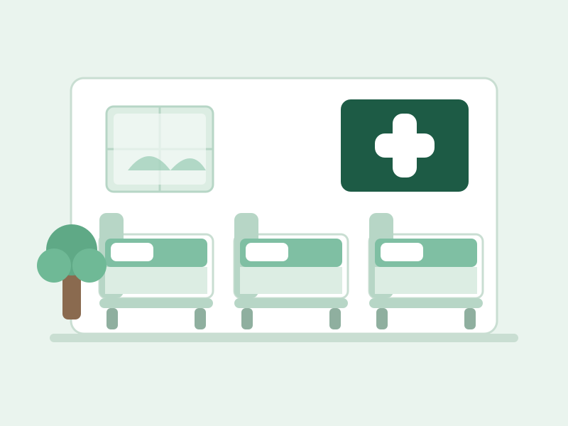

Optimized layout designed to minimize patient movement and waiting time during healthcare consultations and visits.
Ground floor handles daily OPD and support services; the first floor keeps patients for short observation and ward stay.
The moment you enter, reception guides you to the right doctor. The waiting area, both OPD rooms, lab and pharmacy are all on this floor — nothing to climb for a normal checkup.

Patients who need short observation after high fever, dehydration or weakness stay here. A nurse remains on duty, and doctors do rounds twice a day.
Test and medicine — both inside the same building, so one visit finishes everything.
Malaria, dengue, typhoid, blood sugar, haemoglobin and urine tests — most reports ready within a few hours so treatment is not delayed.
Common generic medicines, ORS, syrups and monthly BP/sugar strips stocked right inside the hospital, open till 9 PM.
Common questions about the building and stay.